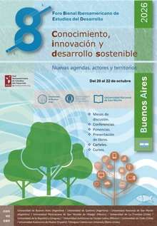

Conocimiento, innovación y desarrollo sostenible: Nuevas agendas, actores y territorios
📍 MODALIDAD ÚNICAMENTE PRESENCIAL
⬇ Descargar Cuarta Circular (PDF)
El 8° Foro Bienal Iberoamericano de Estudios del Desarrollo se propone como un espacio de encuentro, debate y reflexión sobre los desafíos actuales del desarrollo en la región, promoviendo el intercambio entre académicos, investigadores, hacedores de políticas públicas y actores sociales.
Invitamos a investigadores e investigadoras, docentes, estudiantes de posgrado y profesionales a presentar sus trabajos originales enmarcados en los ejes temáticos del Foro.
Ver ejes temáticos y convocatoria ↗